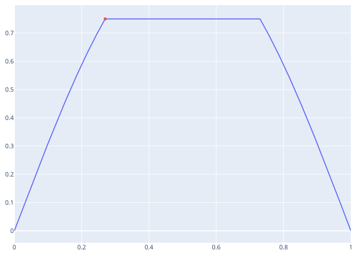
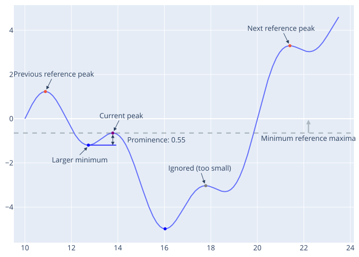
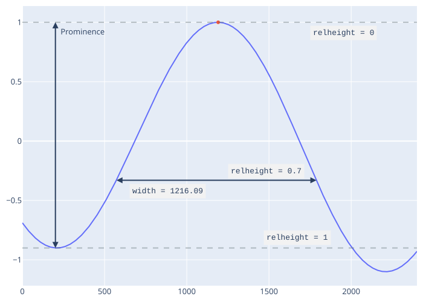

Common terminology
Peak (a.k.a. [local] extrema, maxima, minima, etc.)
An element x[i] which is more extreme than its adjacent elements, or more extreme than all elements in x[i-w:i+w] where w is a positive integer
May specifically refer to the index (i.e. location) of a peak, which is most broadly relevant when speaking of a specific peak
Plateau
A "flat" peak, where the value of the maxima occurs multiple times consecutively, but surrounding elements are less than the maximal value. The first maximal value is considered the peak location. Uncommon for floating-point data.

Peak prominence
For maxima, peak prominence is the absolute difference in height between a maxima and the larger of the two minimums in the adjacent reference ranges. Reference ranges are the range between the current maxima and adjacent (i.e. previous and next) reference maxima, which must be at least as large as the current maxima. The same is true of minima with opposite extrema/extremum (e.g. minima for maxima, and maximum for minimum, etc.).

Peak width
Peak width is measured as the distance (in units of indices) between the intersection of a horizontal reference line with the signal on either side of a peak, where the height of the reference line is offset from the peak height by a proportion of the peak prominence.

"Strict"-ness
The algorithms for finding peaks and calculating peak characteristics (e.g. prominence, etc.) have specific requirements of input data to return the requested outputs. All functions are strict == true by default (keyword argument), but setting the strict keyword to false allows participating functions to relax some alogithmic requirements. When strict == false, functions will make optimistic assumptions in an attempt to return useful information (e.g. not NaN or missing) when data violates normal algorithmic requirements.
maxima/minimafinding functions (e.g.findmaxima, etc.) assume that any missing data in a window is consistent with a peak. For example:- The maximal/minimal value in an incomplete window (i.e. the value
iis withinwelements of the array end,i+w > lastindex(x), or beginning,i-w < firstindex(x)) is assumed to be a peak (i.e. if the array continued, the data would be less/more the current maximal/minimal value) - The maximal/minimal value in a window containing
missingorNaNelements is assumed to be a peak (i.e. themissingorNaNvalues would be less/more than the current value if they existed or were real numbers)
- The maximal/minimal value in an incomplete window (i.e. the value
peakpromsuses the larger present (i.e. notNaNormissing) value of the minimum values in each reference range (see prominence definition)peakwidthslinearly interpolates across a gap at the width reference level